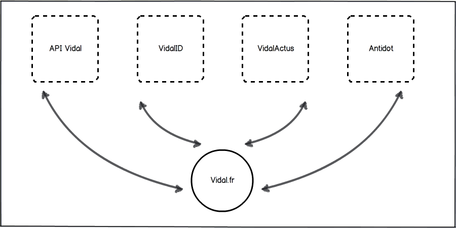

Refonte du site Vidal.fr
N°1 de l'information sur les produits de santé
Client :
Thomas Van Gorkum
Cible :
Professionnels de santé
Traffic :
peu/pas quantifiable
Budget :
~80k €
Objectifs du projet
Centraliser différents services existants chez Vidal (vidalonline, vidalofficine...)
Qualifier le traffic du site Vidal.fr
Générer un traffic important (+- 500k visites / mois)
Besoins du Vidal
Etudes de faisabilité
Accompagnement technique
Exécution graphique
L'équipe du projet
Chef de projet / Leaddev :
Arnaud
Développeurs :
Alain
,
Adrien
Graphistes :
Nico
,
Virginie
,
Cyrine
Choix techniques
1 serveur de développement
1 serveur de production
Framework PHP Cbi
Bugtracker Mantis
Architecture globale initiale
1 frontoffice (vidal.fr)
1 backoffice (vidal.fr/admin/)
4 Webservices interrogés
Pas de données gérées localement
Architecture globale initiale

API Vidal
Job : Fournir l'ensemble des données scientifiques du Vidal
Responsable : Équipe API Vidal
Langage : Java
Architecture : Rest
Format : XML
VidalID
Job : Gère l'authentification des utilisateurs Vidal (front&back)
Responsable : Infotronique
Langage : PHP
Architecture : Soap
Format : Objects
VidalActus
Job : Centralise la gestion des actualités des environnements Vidal
Responsable : Infotronique
Langage : PHP
Architecture : Soap
Format : Objects
Antidot
Job : moteur de recherche
Responsable : Antidot/Équipe BO Vidal
Langage : C# ou C++
Architecture : Rest
Format : JSON
Vidal.fr
Interroge les différents webservices
Analyse & agence l'information comme souhaitée
Déclinaison en version mobile web
Accéder au site
Et maintenant
Pour Avril :
~600 000 visiteurs
~30 000 visiteurs uniques par jour
Lancement d'une campagne d'inscription au nouveau site (~ 100 000 nouveaux utilisateurs potentiels)
Fin de la beta
Les points d'améliorations
Durée du projet
Gestion des délais
Mise-en-ligne